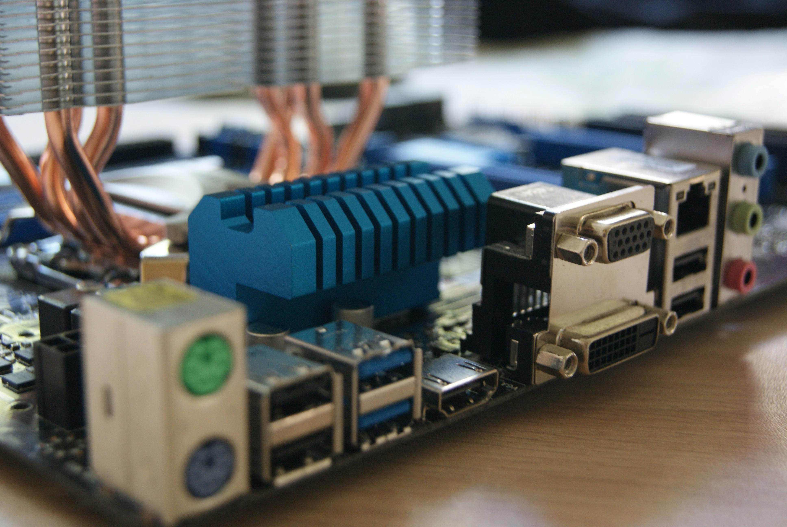
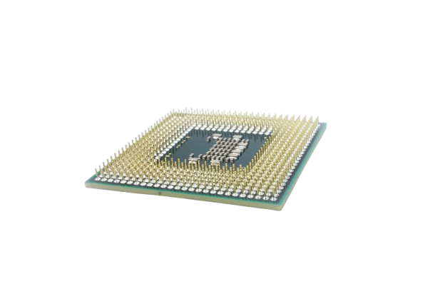
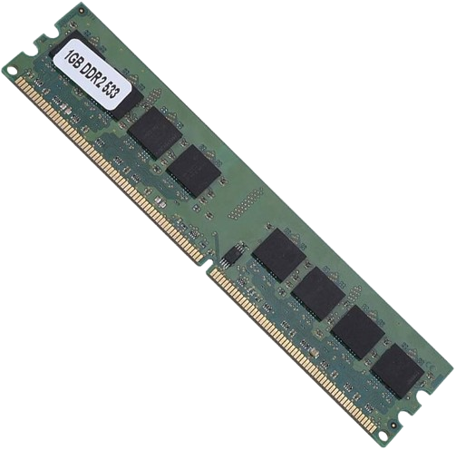
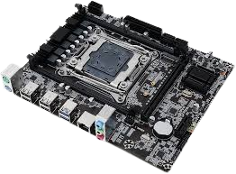
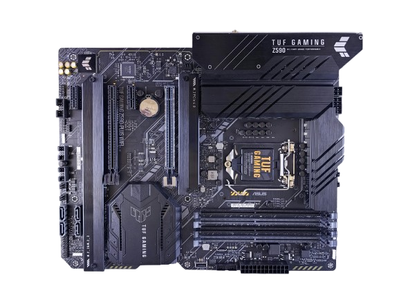
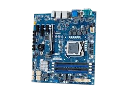

Vad är ett moderkort?
Ett moderkort är som ett centrala kretkortet, Det är den som sammanlänkar och miljögör kommunikation mellan alla datorns komponenter. Alla viktiga dela som t.ex. processor, grafikkort och lagringsheter ansluts med varandra genom modekort som fungerar som plattform.
Huvudkomponenter på moderkortet:
-
CPU-sockel:
I sockel sätts själva processon antingen genom lödsning eller limning. Olika moderkort har olika typer av socklar.
-
Ramer:
Ram funkar som ett minne, Används för att memorera tillfällgt när datorn fungerar men när man stänger av den så rensas Ramen.
-
Expansionsplatser:
Genom dessa platser har människan kunnat anlsuta tillägskort så som grafikkort eller ljudkort.
Typer av modekort:
-
ATX:
Största typen av modekort, Används i stationära datorer, arbetsdatorer eftersom den erbjuder gott om utrymme så används den mycket som spelsystem tack vare den att man kan ladda ner spel som kräver mycket utrymme men datorn laggar inte.
-
Micro-Atx:
Mindre än Atx, man brukar säga att den är kusin till ATX. Micro-ATX erbjuder gott om utrymme men inte så mycket som ATX.
-
Mini-ITX:
Minsta formfaktor används ofta i stationära system. Passar bra för kompaktbyggda datorer, erbjuder en begränsat utrymme.
Om man ska använda många expansionskort eller USB-portar så är ATX bästa valen, däremot om det är inte så mycket portar man ska använda så kan Mini-ITX vara en bra bärbar lödsning







Miljö
Moderkortet innehåller metaller så som guld och koppar. Vilket betyder att det krävs energi vid brytning därför är det bra om man väljer en tillverkare som gör återvining. Det dras energi för att den ska fungera, Vissa moderkort är optimerade att minimera energiförbrukning i viloläge det är bra om man ha sådana moderkort för miljön.
vilket Moderkort ska man välja?
-
Efterosom många roliga spel kräver mycket utrymme så kan det vara bra val att ha ATX-moderkortet. Då är det bättre kylning när man spelar och spelet laggar inte.
-
Om arbtet inte kräver hårdvara så räcker det med Micro-ATX. Annars kan man välja ATX för högrepresterade komponenter.
-
Om man ska använda datorn hemma för att kolla på youtube eller bara några få saker som inte kräver mycket utrymme så kan Mini-ITX Räcka.
För gaming:
För arbete:
Hem:
Tänt på!
-
CPU-sockeln måste matcha din processor. Det finns olika typer och det går inte om CPU inte matchar processorn t.ex. Intel LGA1700
-
Ha koll alltid på datorns kylning om datorn blir varm snabbt så måste det finnas ett problem ta den så fort till någon som kan upptäcka och lösa problemet.